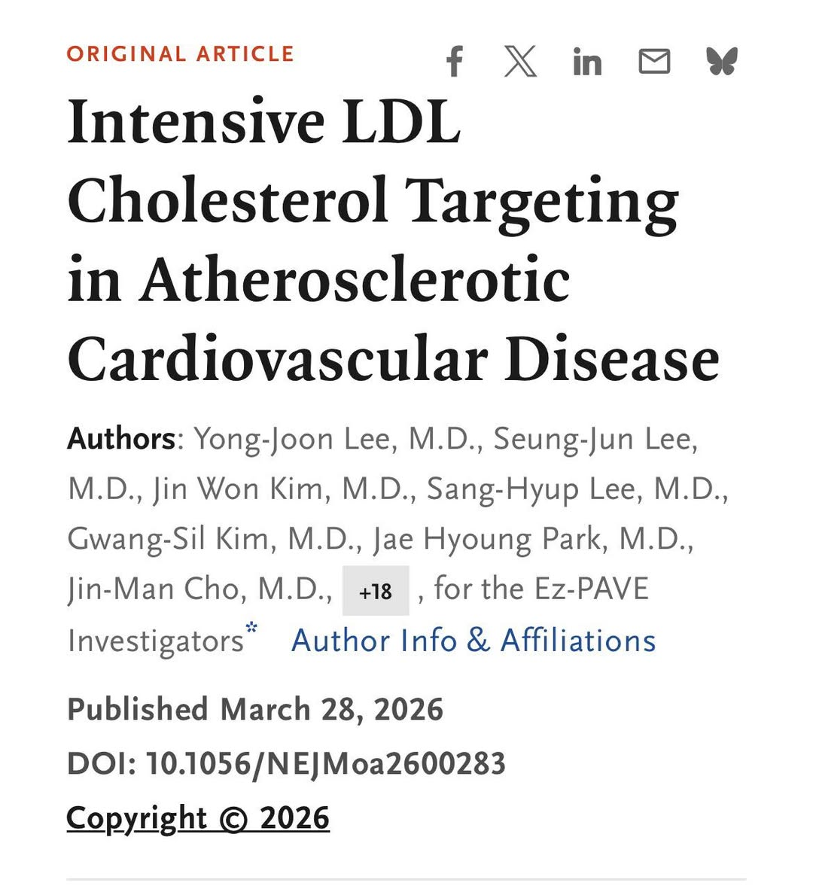

EZ-PAVE: LDL target <55 vs <70 cut major CV events by 33% in over 3,000 patients
A NEJM randomized trial of over 3,000 patients with established heart disease compared an LDL goal under 70 (statin) with under 55 (statin plus ezetimibe). The lower target had 6.6% vs 9.7% major events over 3 years with similar safety.